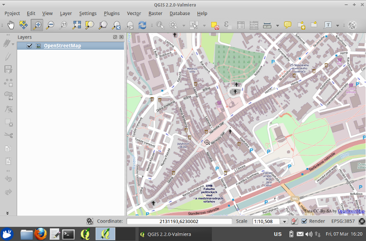
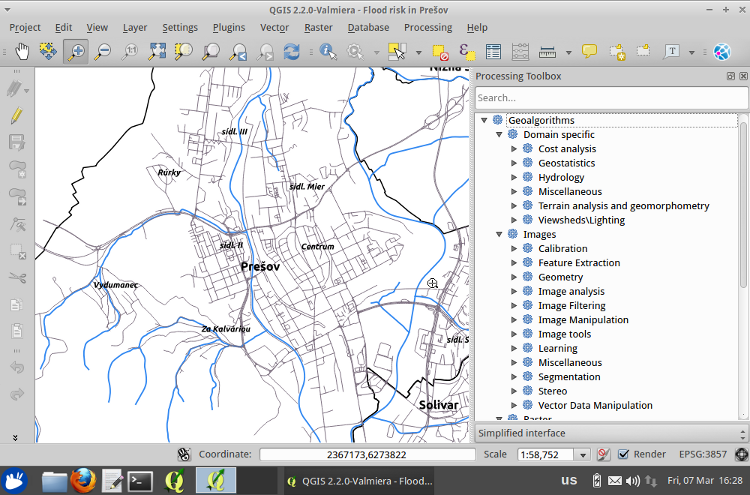

GIS.lab Desktop is a most powerful client interface. It is designed to be launched from network and it is running out-of-box on any desktop machine hardware, without any need of installation.
GIS.lab Desktop client can run in two modes - physical mode and virtual mode. Both modes are providing the same environment and features, but are different in deployment and performance.
Physical client mode
Preferred method of launching GIS.lab Desktop client is a physical mode. In this mode, client machine is configured to start a GIS.lab client environment from network instead of hard disk. Access to operating system physically installed on client machine is temporary lost and it will be restored after machine restart without any changes or a danger of data loss. This mode is providing a best performance.

Fig. 1: Machines turning to GIS.lab Desktop physical clients and back
Virtual client mode
In case when user can't offer loosing access to a system physically installed on client machine, there is a possibility to launch GIS.lab client inside of any Windows, Linux or Mac OS X operating system in virtual mode. This mode is starting the same client environment from network as in physical mode, but it is running inside of VirtualBox virtual machine. This mode allows to run both systems side-by-side. It is possible use GIS.lab virtual client in a windowed mode, similar as it would be a common application or in a full screen mode for best user experience.

Fig. 2: Machines turning to GIS.lab Desktop virtual clients and back
Services provided by GIS.lab client
Office productivity suite
GIS.lab Desktop environment offers fully featured office productivity suite which contains tools such as text documents, tables and presentations editor, Internet browser, Email and chat client, images and vector graphic editor, video viewer and more.
 Fig. 3: LibreOffice Writer
Fig. 3: LibreOffice Writer
Implemented by: LibreOffice, Firefox, Thunderbird, Pidgin, GIMP, Inkscape, VLC
Base maps
Well known base maps such as OpenStreetMap or Google maps are accessible from GIS projects when Internet connection is available. They are ready to provide a quick overview of any place on earth.
 Fig. 4: OpenStreetMap base map in desktop GIS editor
Implemented by: QGIS, QGIS OpenLayers plugin, GIS.lab Web
GIS data processing and analysis
GIS software provided by GIS.lab can successfully read and write large number of spatial data formats like AutoCAD DXF, ESRI Shapefile, GeoJSON, GML, GeoJPEG, KML, Microstation DGN v.7, OpenStreetMap XML and PBF, SQLite/SpatiaLite, TIFF/GeoTIFF, PostgreSQL/PostGIS, MS SQL Spatial, Oracle Spatial, OGC WMS and WFS and many more. Most of the world's spatial reference systems (SRS) are transparently handled by on-the-fly reprojection. Geometry and attribute data can be created and modified by advanced geometry editing, data processing tools and analysis.
 Fig. 5: Available analysis in desktop GIS editor
Implemented by: QGIS, QIS Processing Toolbox, GDAL, Proj4, SpatiaLite
Print composer
Powerful print composer allows to create outputs in raster and PDF format. Output maps can include legends, labels, scale bar, vector shapes and arrows, tables and html content. Output layout can be created as single landscape or portrait page or as multiple pages in atlas format.
 Fig. 6: Print composer
Fig. 6: Print composer
Implemented by: QGIS, QGIS Print composer